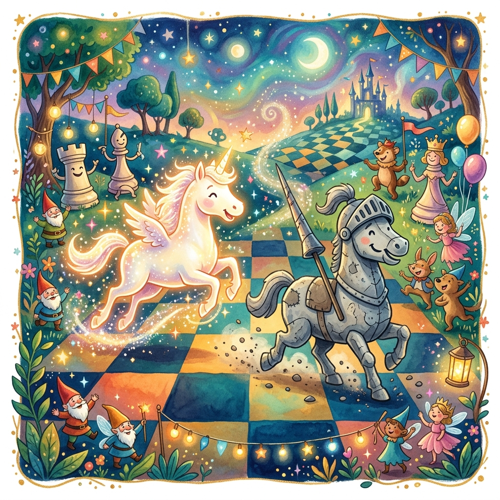

La Coronación de Peoncito
Donde Peoncito llega a la octava fila y descubre que elegir quién ser es más difícil que atravesar un tablero infinito
♟️ Ver partida de subcoronación ↓▶️ ¿Prefieres escuchar la historia? Clic aquí para ver el Audiolibro Animado
Si hay algo más difícil que avanzar de uno en uno durante tres cuentos enteros, soportando burlas por un bigote falso, esperando diecisiete veces a que una niña de nueve años te alcance, y viendo cómo tu primo trabaja de rueda en un carrito de empanadas... es llegar. Llegar de verdad. Y no saber qué hacer.
Peoncito estaba en la séptima fila. Le faltaba una casilla. Una. Después de siglos de ser invisible —con estilo, pero invisible—, el peón de cristal se encontraba frente a la puerta más grande que había visto en su vida. No era una puerta de madera ni de piedra. Era una puerta de luz. Rectangular. Luminosa. Vibrante.
Detrás de esa puerta estaba la octava fila. Y en la octava fila, todo peón que llega puede convertirse en lo que quiera: dama, torre, alfil o caballo. El sueño de cualquier peón. La razón por la que los peones avanzan, aunque sepan que van a morir en el intento.
Peoncito llevaba diez minutos parado. Con su bigote perfectamente encerado. Sin moverse.
—¿Y ahora qué? —preguntó al vacío.
El vacío no respondió. Los vacíos nunca responden. Son muy maleducados.

La noticia corrió por el Reino de las Sesenta y Cuatro Casillas más rápido que un jaque doble. Peoncito, el peón del bigote, estaba a punto de coronar. Y todo el mundo —piezas, peones, empanaderos y relojes parlanchines— quería opinar.
La primera en llegar fue Torreta, que cerró el carrito de empanadas y apareció en la casilla c8 con un delantal limpio y un discurso preparado.
—Peoncito, amigo mío —dijo con su voz ronca de piedra—. Sé torre. Las torres tenemos sindicato. Tenemos descansos los domingos. Tenemos un plan de pensiones que incluye dos almenas y un foso a elección. Además, mira qué elegancia —giró sobre sí misma, mostrando su perfil rectangular—. Somos la envidia de las damas. Bueno, de las damas no, porque ellas se mueven para todos lados, pero de los alfiles seguro.
—Vendo empanadas —añadió—. Eso también es un plus.
Antes de que Peoncito pudiera responder, un galope atronador sacudió el tablero. El Caballo de Ŋ aterrizó en la casilla g7 —una L imperfecta, pero solo por un milímetro— y casi se lleva por delante el mostrador de Torreta.
—¡PEONCITO! —relinchó—. ¡Hermano de bigote! ¡Tienes que ser caballo! ¡Los caballos somos LIBRES! ¡Saltamos donde queremos! ¡Por encima de peones, por encima de torres, por encima de...!
—¿Por encima de alfiles? —preguntó una voz seca desde la diagonal a1-h8.
El Alfil Exiliado apareció deslizándose por las casillas negras (las blancas, por supuesto, seguían vetadas por el comité de exilio).
—Sé alfil —dijo—. Las diagonales son infinitas. La perspectiva es única. Ves cosas que las demás piezas no ven. Y además... —bajó la voz, confidencial— puedes elegir tu color. Literalmente. Aunque te sugiero las negras. Las blancas están sobrevaloradas y además a mí no me dejan usarlas, así que por solidaridad...
—Las blancas son perfectamente válidas —dijo una voz desde el cielo.
Era la Reina Blanca. Nunca hablaba. Bueno, casi nunca. Llevaba tres cuentos en silencio y todos asumían que era muda o tímida o estaba jugando una simultánea a ciegas en otra dimensión. Pero ahí estaba, flotando sobre la octava fila, con su corona de luz y su mirada que abarcaba todas las direcciones a la vez.
—Peoncito puede ser lo que quiera —dijo—. Esa es la belleza de la coronación.
—¡Que sea dama! —chilló una voz desde la retaguardia.
La Reina Negra avanzó con una caja de pañuelos bajo el brazo y un certificado médico en la otra mano.
—Las damas lo tenemos todo —dijo—. Poder, movilidad, estilo. Eso sí: si alguien te hace jaque mate, te aconsejo un buen antihistamínico. Yo uso este —mostró la caja—. Se llama «Antimatex Forte». Sabe a regaliz pero funciona.
—Eso no existe —dijo Torreta.
—Claro que existe. Lo compré en la farmacia de la casilla b2. Atiende un peón con bata blanca. Muy profesional. Bigote también. Es una epidemia.
Peoncito miraba a todos. A Torreta con su sindicato. Al Caballo de Ŋ con su libertad. Al Alfil Exiliado con sus diagonales vetadas. A la Reina Blanca con su silencio sabio. A la Reina Negra con sus antihistamínicos falsos.
Todos le ofrecían algo. Todos querían que fuera como ellos. Y Peoncito, por primera vez en su vida, no sabía qué hacer con su bigote.
—Necesito a Martina —dijo.
Martina llegó justo a tiempo. Literalmente. El reloj parlante, que había estado cronometrando el debate, anunció:
—Diecisiete minutos y treinta y dos segundos. Eso es lo que tardan en aparecer cuando más las necesitas. La relatividad dice que...
—Cállate —dijeron todos.
—Me callo. Pero conste que diecisiete minutos es mucho.
Martina se acercó a Peoncito. El peón la miró con sus ojitos de cristal y su bigote perfectamente encerado. Pero sus ojos decían algo que su bigote no podía ocultar: miedo.
—No sé qué ser —dijo Peoncito—. Todos quieren que sea como ellos. Y yo... yo solo sé ser peón. Avanzar de uno en uno. Morir en diagonal. Tener un bigote falso.
Martina se agachó a su altura.
—Peoncito, ¿tú sabes cuál es el problema de los peones?
—¿Que somos invisibles?
—No. Que pasan tanto tiempo siendo insignificantes que cuando llega su momento, no se lo creen. Pero mira a tu alrededor. Mira este tablero.
Peoncito miró. El tablero infinito se extendía en todas direcciones. Piezas blancas y negras. Ríos de mercurio. Un carrito de empanadas. Un reloj colgado de un poste. Una estrella rebelde en h12.
—En este reino —continuó Martina— nadie puede moverse por ti. Nadie puede decidir quién eres. Ni Torreta, ni el Caballo de Ŋ, ni el Alfil Exiliado, ni yo. La coronación es tuya. Solo tuya.
—Pero... ¿y si elijo mal?
—No se puede elegir mal —dijo Martina—. Se puede elegir lo que la posición necesita. Y para eso hay que entender la posición.
—¿Y cómo entiendo la posición?
Martina sonrió. La sonrisa de quien va a hacer lo que más le gusta.
—Te lo enseño en una partida.
Martina se sentó frente al tablero ceremonial. Del otro lado, como adversaria, apareció la Reina Blanca. Era la primera vez que alguien la veía jugar. Su estilo era puro: sin trucos, sin trampas, sin pañuelos. Ajedrez clásico.
—Te advertiré —dijo la Reina Blanca— que no me gustan las tablas.
—A mí tampoco —dijo Martina—. Vamos a divertirnos.
—¿Esto va a doler? —preguntó Torreta desde la banda, tapándole los ojos a dos peones-rueda—. A mí las partidas de alto nivel me dan acidez. Y tengo empanadas en el horno.
Martina jugó e4. La Reina Blanca respondió e5. Martina desarrolló su caballo a f3. La Reina jugó Cc6. Martina llevó su alfil a b5. La Apertura Española. La Reina Blanca jugó a6, la variante Morphy.
—Observa, Peoncito —dijo Martina mientras movía—. La Española es una apertura de maniobras. Todo gira alrededor del centro. Los peones empujan. Las piezas se colocan detrás. Y poco a poco...
—Como el tráfico en hora punta pero con menos bocinas —comentó el Reloj Parlante, que obviamente no sabía nada de tráfico.
La partida avanzó. Martina cambió su alfil por el caballo en c6, dobló los peones negros, y empezó a maniobrar. Su caballo fue de b1 a d2, luego a f1, luego a g3. Las blancas presionaban. Las negras resistían.
—Ese caballo se movió más que yo en toda mi vida —murmuró Peoncito, que llevaba siglos en el mismo escaque—. Y yo soy el que va a coronar. Esto es injusticia poética.
—El peón de d4 —dijo Martina en la jugada catorce— es la clave. Desde aquí controla e5 y c5. No puede ser atacado fácilmente. Y si avanza...
Jugó d5. El peón blanco avanzó al centro del tablero, apoyado por sus compañeros. La Reina Blanca tuvo que retirar su caballo.
—Ahora tengo un peón pasado —explicó Martina—. Un peón que no tiene peones enemigos enfrente. Un peón que, si llega a la octava fila, se convierte en lo que yo necesite para ganar.
Peoncito, desde la banda, observaba hipnotizado. Ese peón de d5 era como él. Pequeño. Pero rodeado de aliados. Protegido por el caballo en f3, por la dama en d2, por la torre en d1. Todo el ejército blanco empujaba a ese peón hacia adelante.
—Míralo —susurró el Caballo de Ŋ, señalando con el hocico— Ese peón va a llegar antes que Peoncito. Y ni siquiera tiene bigote.
—No avanza solo —dijo Peoncito en voz baja, ignorando a su amigo equino.
—Exacto —dijo Martina—. Ningún peón avanza solo. Detrás hay un ejército. Y la decisión de coronar no es tuya nada más. También es de la posición.
—¿Y si la posición pide dama? —preguntó Peoncito—. ¿Y si pide alfil? ¿Y si pide... —bajó la voz— un puesto en el carrito de empanadas?
—Hay vacantes —dijo Torreta—. Pero necesitas carnet de manipulador de alimentos. Incluso los peones coronados necesitan carnet.
Martina siguió presionando. La Reina Blanca, acorralada, cometió un error en la jugada veintidós: capturó un peón en b2 con su dama, alejándose del centro. Martina vio la oportunidad.
—La Reina se fue de compras —diagnosticó el Alfil Exiliado—. Error clásico. El centro no se abandona por un peón gratis. Es como cambiar una empanada entera por la servilleta.
—La servilleta también es importante —protestó Torreta.
—Cállate, Torreta.
—Ahora —dijo Martina—. Es el momento.
d6.
El peón blanco avanzó a la sexta fila. Amenazaba d7, luego d8. La Reina Blanca intentó bloquear con su torre. Martina respondió con Te1, clavando al alfil defensor. La presión era insoportable.
—¡Está a dos casillas! —gritó Peoncito—. ¡Dos! ¡Yo llevo tres cuentos y este peón lo hace en veinte jugadas! ¡Esto es favoritismo táctico!
—Tú eres el protagonista —le recordó Martina—. Él es el ejemplo. Aguanta.
d7.
El peón llegó a la séptima fila. A un paso de la gloria. La posición entera temblaba. Las piezas negras se agolpaban alrededor del peón como hormigas alrededor de una miga.
—Y ahora —dijo Martina—, llega la pregunta. Peoncito, ¿en qué se convierte este peón?
Peoncito miró la posición. El peón blanco en d7. Las negras defendiendo d8 con dama y torre. Si coronaba dama, sería capturada. Si coronaba torre, lo mismo. Si coronaba alfil, no daría jaque y el ataque se disipaba.
—Piénsalo bien —dijo el Alfil Exiliado—. No te presiono. Pero si eliges alfil, te regalo una diagonal de cortesía.
—Si eliges torre —dijo Torreta—, te afilio al sindicato sin cuota de ingreso. Oferta por tiempo limitado.
Peoncito los ignoró a todos. Miró la posición.
—Caballo —dijo—. Tiene que ser caballo.
Martina sonrió. La sonrisa más grande de la noche.
—Exacto.
d8=C+.
El peón blanco tocó la octava casilla y se transformó en un caballo de luz pura. El nuevo caballo dio jaque al rey negro Y amenazaba a la dama negra al mismo tiempo. Un doble de caballo recién nacido.
La Reina Blanca parpadeó. Miró la posición. Su rey estaba en jaque. Su dama estaba amenazada. No podía salvar las dos.
—Coronar dama habría sido inútil —dijo Martina—. Habría sido capturada enseguida. Pero un caballo... un caballo en el momento justo... —hizo una pausa— vale más que diez damas coronadas sin propósito.
La Reina Blanca inclinó su corona. Una rendición silenciosa y elegante.

El tablero estalló en celebración. El Caballo de Ŋ galopó en círculos alrededor del nuevo caballo recién coronado, tan emocionado que sus saltos eran una mezcla de L, J, Ŋ y una letra que nadie había visto antes.
—¡UN HERMANO! —relinchaba—. ¡TENGO UN HERMANO CABALLO QUE ANTES ERA PEÓN Y AHORA ES CABALLO COMO YO! ¡ESTO ES LO MEJOR QUE ME HA PASADO DESDE QUE DESCUBRÍ QUE LA Ŋ NO EXISTE!
—La Ŋ sí existe —dijo el peón recién coronado, relinchando también— ¡La acabo de ver en tu penúltimo salto!
—¿EN SERIO? ¡SOY UN GENIO SIN SABERLO!
Torreta, resignada, abrió de nuevo el carrito.
—Bueno —dijo—. Será caballo. Al menos puedo venderle empanadas. ¿Caballo, quieres una de Fianchetto de Alfil? —gritó hacia el nuevo caballo—. ¿O prefieres una de Gambito de Dama?
—¡DE CABALLO! —relinchó el recién coronado—. ¿TIENES DE CABALLO?
—No existe la empanada de caballo.
—¡PUES LA INVENTAMOS!
El Alfil Exiliado, desde su diagonal, observó la escena con una mezcla de orgullo herido y respeto genuino.
—Caballo —murmuró—. Eligió caballo. Con lo bonitas que son las diagonales... —suspiró—. Pero fue la elección correcta. Maldita sea. Odio cuando la elección correcta no es la mía.
La Reina Negra estornudó dos veces. Una por la emoción del jaque y otra porque alguien había abierto una empanada de Siciliana picante demasiado cerca.
Martina se acercó a Peoncito, que seguía en la séptima fila. El peón de cristal no había avanzado. Seguía allí, con su bigote perfectamente encerado, mirando el tablero ceremonial como quien mira un mapa del tesoro y ya sabe dónde está la X.
—¿Lo entendiste? —preguntó Martina.
—Sí —dijo Peoncito—. No se trata de elegir lo que los demás quieren. Se trata de entender qué necesita la posición.
—Y también se trata de que no tienes que decidir ahora.
Peoncito la miró, confundido. Tanto que el bigote se le torció treinta grados a la izquierda sin que él lo notara.
—¿Cómo que no?
—Estás en la séptima fila —dijo Martina—. Pero todavía no has llegado a la octava. Falta una casilla. Y en esa casilla está la decisión. Pero la decisión no se toma ANTES de llegar. Se toma CUANDO llegas. Cuando ves la posición. Cuando entiendes qué necesita el tablero.
Peoncito bajó la mirada. Luego la levantó. Su bigote brillaba con una luz nueva (en parte por la emoción, en parte porque Torreta acababa de encender un farolito de queroseno para las empanadas nocturnas).
—Entonces... ¿me espero?
—Te esperas. Y cuando llegue el momento, lo sabrás.
—¿Y si el momento es ahora?
Martina negó con la cabeza.
—No lo es. Ahora es el momento de celebrar que casi llegaste. Que estás a una casilla. Que después de tres cuentos, de bigotes caídos, de empanadas frías y de amenazas de tablas perpetuas... estás aquí. En la séptima. Vivo. Con estilo.
Peoncito se irguió. Era la primera vez en toda su existencia que se sentía alto. No por la octava fila. Sino por lo que había recorrido para llegar a la séptima.
—Gracias —dijo.
—No me las des —dijo Martina—. Las gracias se las das al tablero que te aguantó, a las piezas que te protegieron, y a ese bigote ridículo que nunca se rindió aunque se despegara diecisiete veces.
—Veintitrés —corrigió Peoncito—. Las conté. Veintidós en el primer cuento y una más cuando estornudó la Reina Negra y se me voló hasta la casilla f6. Tuve que pedirle al Caballo de Ŋ que me lo trajera. Tardó cuatro intentos. Los primeros tres fueron Ŋ.
Martina sonrió.
—Veintitrés. Mejor todavía.
La fiesta de pre-coronación duró toda la noche. Torreta sirvió empanadas de todas las aperturas conocidas (excepto la de Fianchetto, que nadie pidió como siempre, y la de caballo, que el nuevo Pegasito insistió en que existía). El nuevo caballo, bautizado como «Pegasito» por el Caballo de Ŋ (que quería llamarlo «Ŋito» pero fue vetado por unanimidad), galopaba feliz por el tablero haciendo saltos casi perfectos. El Alfil Exiliado dio un discurso sobre «la belleza de las decisiones posicionales» que solo entendió él mismo y que duró tanto que tres peones se durmieron y uno coronó sin querer. La Reina Negra repartió pañuelos a todos, por si alguien estornudaba de la emoción, y estornudó ella misma doce veces, estableciendo un nuevo récord personal «no relacionado con ningún jaque mate, es alergia estacional», aclaró mostrando el certificado falso.
Martina sintió que el tablero se volvía suave. La luz de la octava fila se fue desvaneciendo, transformándose en la luz de su lamparita de noche.
Antes de irse, Peoncito la miró.
—Cuando llegue a la octava —dijo—, ¿me prometes que estarás?
—Te lo prometo.
—¿Y me ayudarás a elegir?
—No. Elegirás tú. Pero yo estaré mirando.
Peoncito asintió. Su bigote, por una vez, no se movió.
Martina cerró los ojos. Y lo último que vio antes de dormirse fue a un peón de cristal con bigote, en la séptima fila, mirando hacia la octava con los ojos brillantes.
No había avanzado todavía. Pero ya no tenía miedo de avanzar.
Y eso, en el fondo, era casi lo mismo que coronar.
Fin del quinto cuento.
Continuará…
🏛️ El Secreto detrás del Cuento
En el ajedrez, casi todos los peones que llegan a la octava fila eligen convertirse en dama, porque es la pieza más poderosa. Pero a veces, la posición necesita algo distinto. Esto se conoce como subcoronación (underpromotion). ¡Reproduce esta increíble partida donde elegir a un caballo de luz en vez de una poderosa dama fue la única jugada ganadora!
¿Te gustó este cuento? Compártelo: